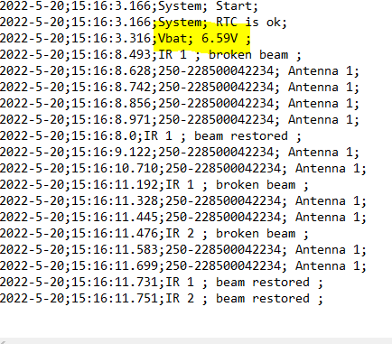

- [X] RTC OK
- [X] La RTC donne l'heure correcte
- [X] à chaque démarrage
-
[X] d'un jour sur l'autre
-
[X] RFID always ON
-
[X] RFID logged in file
-
[ ] Temperature acurracy
-
[ ] Temperature logged in file
-
[X] IR Events OK
- [X] IR Events Switch ON RFID
-
[X] IR Events Recorded
-
[ ] Fichier de configuration chargement OK
-
[ ] Enregistrement OK
-
[ ] Special TAG
-
[ ] Modes de capture
-
[X] Mesure de la tension de batterie
-
[X] Écriture du voltage de la batterie intempestive et très variable Mesures batteries rendues périodiques
if (time_last_voltage.unixtime() + 2 <= now.unixtime())Et ajout de condensateur au borne de la pin de lecture (1uF) et au bornes de la batterie (1mF) -
[X] Mauvaise Lecture batterie AVANT: Lecture batterie par le dispositif: 6.59V sur pin 9 (mesure batterie interne) alors que la batterie (3 piles rechargeables 1.2V) est mesuré au multimètre à 3.57V APRES: Problème résolu en mettant un pont diviseur sur une autre pin que la pin 9

-
[X] Mise hors tension du système pour protéger les piles.
-
[X] éteindre LED ext au bout d'1 min